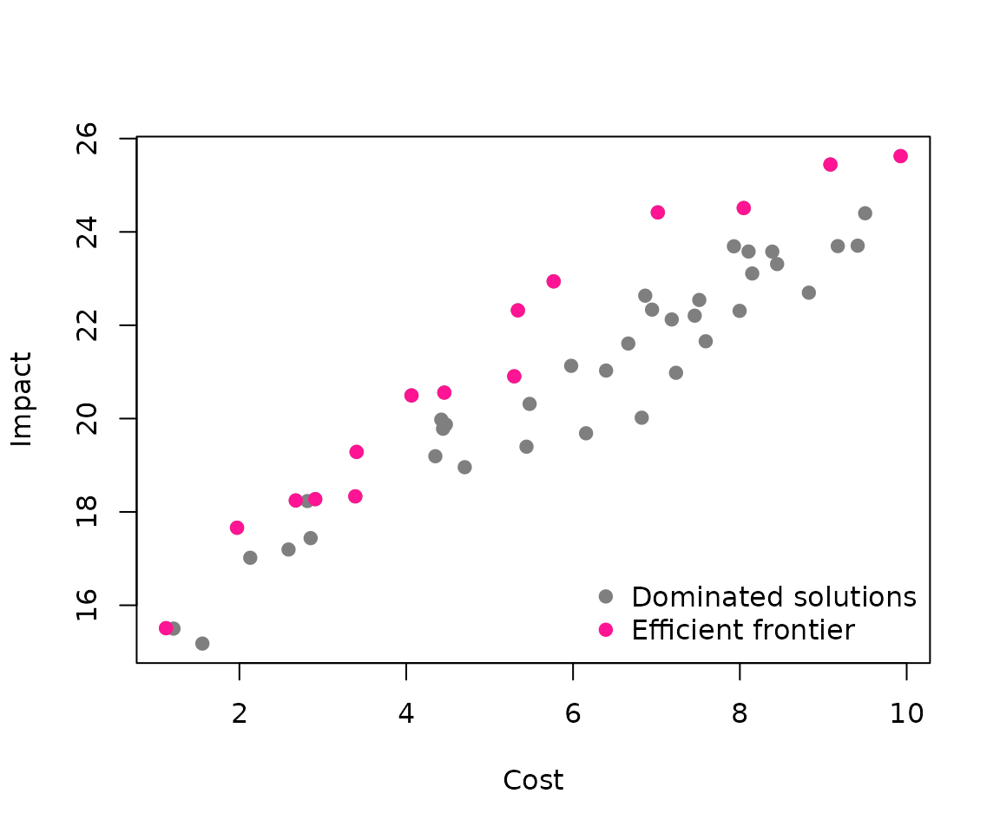
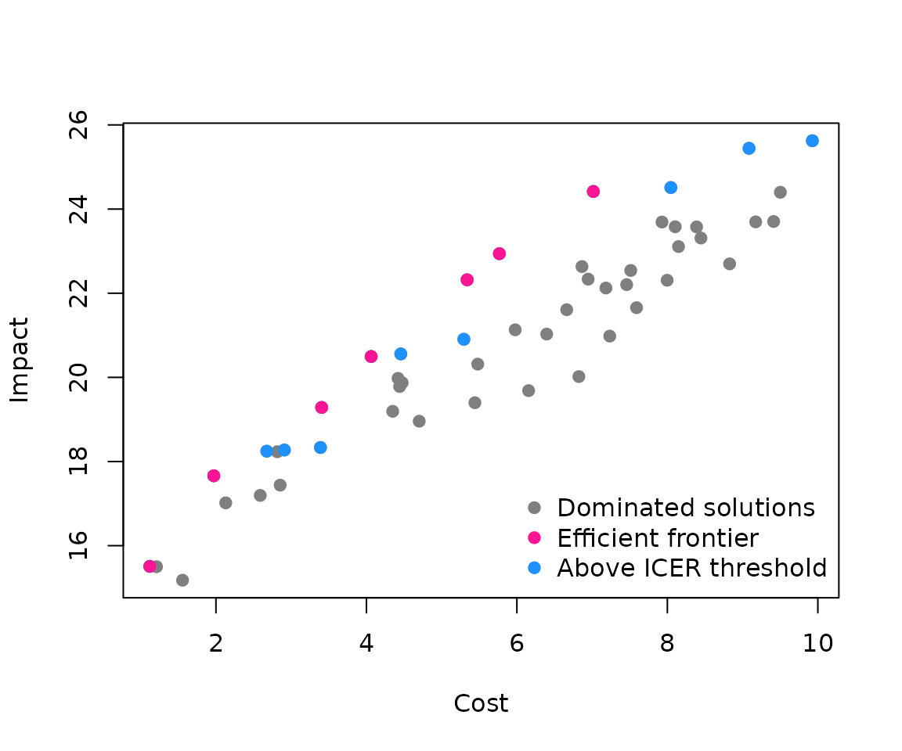
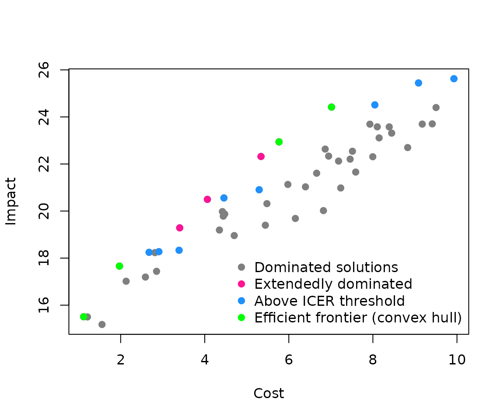

Cost-effectiveness frontier
frontier.Rmd#> Loading required package: ROI.plugin.glpk
#> Loading required package: ompr
#> Loading required package: ompr.roiThis vignette demonstrates how to find the cost-effectiveness
frontier using frontier(). We’ll create a small simulated
data set with cost and impact values and then highlight the solutions
that lie on the frontier. We also apply a threshold that limits
the maximum cost per unit of impact gained. The World Health
Organization suggests that interventions costing up to 1–3 times a
country’s GDP per capita for each disability-adjusted life year (DALY)
gained are often considered cost-effective. In our generic example this
simply means setting an upper limit on the cost divided by impact.
set.seed(1)
example <- data.frame(
cost = runif(50, 1, 10)
)
example$impact <- 15 + example$cost + rnorm(50)We can visualise the frontier relative to all generated points. Points that lie on the frontier are shown in pink. Fully dominated solutions are in grey.
frontier_solution <- frontier(example)
plot(
example$impact ~ example$cost,
pch = 19,
xlab = "Cost",
ylab = "Impact",
col = "grey50"
)
points(frontier_solution$impact ~ frontier_solution$cost, col = "deeppink", pch = 19)
legend(
"bottomright",
legend = c("Dominated solutions", "Efficient frontier"),
col = c("grey50", "deeppink"),
pch = 19,
bty = "n"
)
We can also drop dominant solutions that fall outside of a user-specified ICER threshold, those filtered out by the threshold are coloured blue
frontier_threshold_solution <- frontier(example, threshold = 1)
plot(
example$impact ~ example$cost,
pch = 19,
xlab = "Cost",
ylab = "Impact",
col = "grey50"
)
points(frontier_solution$impact ~ frontier_solution$cost, col = "dodgerblue", pch = 19)
points(frontier_threshold_solution$impact ~ frontier_threshold_solution$cost, col = "deeppink", pch = 19)
legend(
"bottomright",
legend = c("Dominated solutions", "Efficient frontier", "Above ICER threshold"),
col = c("grey50", "deeppink", "dodgerblue"),
pch = 19,
bty = "n"
)
We can also drop dominant solutions that are not on the convex hull of the frontier. That leaves solutions shown in Green
frontier_threshold_solution_hull <- frontier(example, convex_hull = TRUE, threshold = 1)
plot(
example$impact ~ example$cost,
pch = 19,
xlab = "Cost",
ylab = "Impact",
col = "grey50"
)
points(frontier_solution$impact ~ frontier_solution$cost, col = "dodgerblue", pch = 19)
points(frontier_threshold_solution$impact ~ frontier_threshold_solution$cost, col = "deeppink", pch = 19)
points(frontier_threshold_solution_hull$impact ~ frontier_threshold_solution_hull$cost, col = "green", pch = 19)
legend(
"bottomright",
legend = c("Dominated solutions", "Extendedly dominated", "Above ICER threshold", "Efficient frontier (convex hull)"),
col = c("grey50", "deeppink", "dodgerblue", "green"),
pch = 19,
bty = "n"
)
The convex frontier is the standard approach in cost-effectiveness analysis: it removes extendedly dominated options so that incremental cost-effectiveness ratios (ICERs) increase monotonically. This identifies the minimal set of strategies that could be optimal when interventions are compared sequentially at a given willingness-to-pay threshold.
The full non-dominated set includes all strategies that are not strictly worse than any other. Although some may be extendedly dominated, this view can be more informative when exploring how the set of cost-effective options might change as budgets increase or decrease.